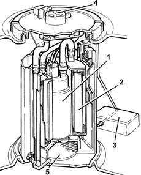
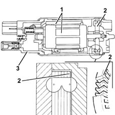
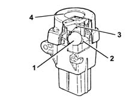

DESCRIPTION OF COMPONENTS
- Path
- Descriptions > 10 ENGINE > 1040 FUEL TANK AND PIPES > 1040A FUEL TANK AND COMPONENTS > DESCRIPTION OF COMPONENTS
- Kind
- system description
- Applies to
- engines: 2.4 20V; all production periods
- Interactive page
- https://sloeber94.github.io/elrnDB-lThss/en/#/606475
Applies to: engines: 2.4 20V; all production periods
SUBMERGED PUMP ASSEMBLY COMPLETE WITH LEVEL GAUGE
Composition
Structure
It basically consists of:
- an electric fuel pump (1)
- a fuel filter (2)
- a float level level gauge (3)
- a pressure regulator (4)
- a gauze pre-filter (5).

Type
The electric fuel pump is fitted with a permanent magnet electric motor (1) which operates the pump impeller (2) and a support cover (3) which contains the electrical and hydraulic connections.
The electric pump is the peripheral flow single type with high performance in low voltage and temperature conditions.
The advantages compared with electric pumps that operate on the volumetric principle are:
- light.
- small.

INERTIA SWITCH
Specifications
Function
In the case of an impact, the inertia switch, fitted to the left of the driver's seat on the inner running board crossmember, interrupts the connection to earth for the electric fuel pump and consequently the supply to the injection system.
COMPOSITION
Operating principles
A steel ball (1) fitted in a conical shaped housing (2) is normally kept in place by the attraction force of an adjacent magnet.
In certain acceleration conditions, the ball is released from the magnetic keeper and gradually comes out of the conical shaped support moving upwards depending on the angle of the cone.
There is a rapid release mechanism (3) above the ball that forms the normally closed (N.C.) electrical circuit.
When the mechanism is struck by the ball, it changes position, from a normally closed circuit to a normally open circuit, interrupting the earth circuit for the electric fuel pump.
The switch can be reset by pressing a button protected by a cover (4).
